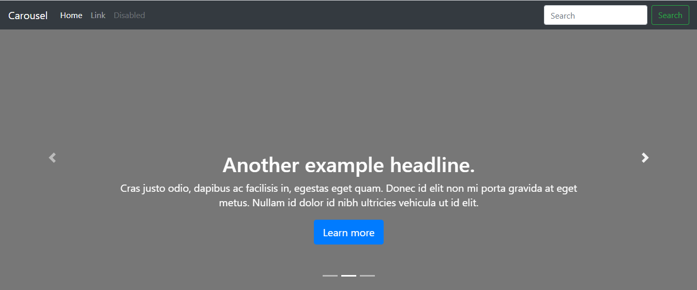
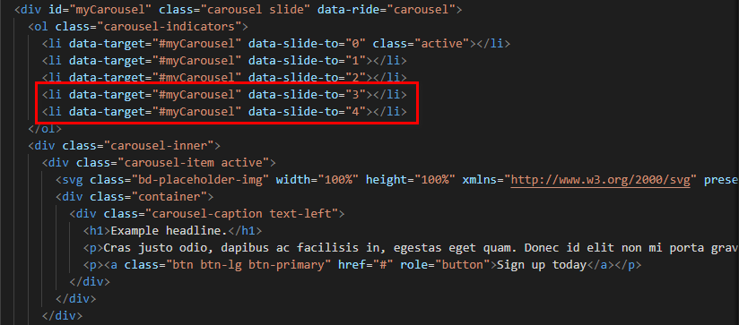
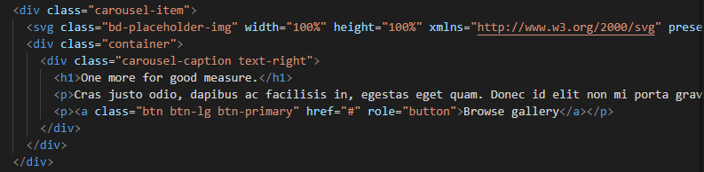
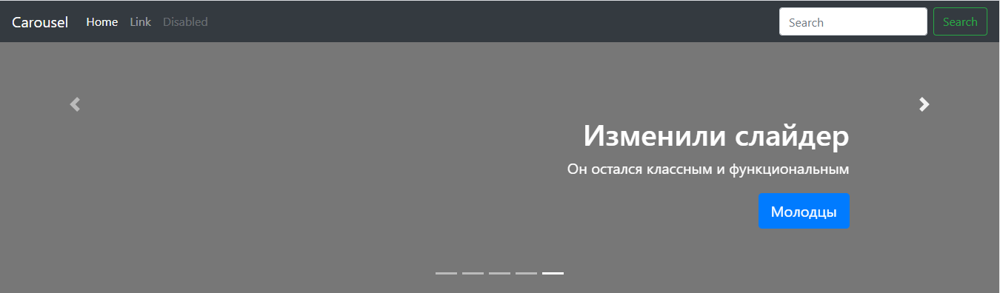

Он отлично подходит для прототипирования. Если нужно быстро проверить какую-то гипотезу или показать пример заказчику, то сборка во фреймворке — оптимальный вариант. Если делать индивидуальный дизайн, то проще верстать с нуля, а не пытаться перебрать все стили и скрипты в Bootstrap.Bootstrap правда очень помогает сэкономить время и при этом создать приличный шаблон, но тащит кучу лишнего кода и слабо подходит для нестандартных проектов. Все недостатки Bootstrap можно устранить перебором его исходных файлов, но это занимает столько времени, что любой опытный разработчик выберет верстку макета с нуля.
Какую версию Bootstrap выбрать?
Последняя стабильная версия — 4.5.1. Ее и стоит использовать. Сетка в ней построена на Flexbox, это достаточно распространенная технология. Сервис Can I Use показывает, что верстка на флексах поддерживается всеми современными версиями браузеров. Частичная поддержка есть в Internet Explorer 10 и 11. В третьей версии Bootstrap сетка построена на Float. Это устаревшая технология, которая не дает такой гибкости, как Flexbox. Зато на флоатах можно верстать для старых браузеров, вплоть до Internet Explorer 6. Если вашему проекту нужна такая поддержка (вряд ли), то используйте Bootstrap 3.4.1.
Вёрстка с помощью Bootstrap
Перед началом вёрстки нужно установить Bootstrap. Сделать это вы можете на официальном сайте с помощью инструкций, в которой есть все способы установки. После установки --> Для работы с Bootstrap нужен текстовый редактор и браузер, в котором вы будете видеть результат верстки с помощью фреймворка.Для удобства рекомендую скачать примеры. Они помогают понять возможности фреймворка. Примеры можно использовать для верстки прототипов, особенно в ситуации, когда макет нужно было сдать еще вчера. Допустим, я хочу быстро собрать слайдер. В примерах есть карусель. Внутри папки — два файла: index.html и carousel.css. Я открываю их в редакторе и исправляю так, как мне нужно. Например, в моей карусели будет не три карточки, а пять. Для этого достаточно в файле index.html добавить еще два компонента. Изначально карусель выглядит вот так. -->

Открываем файл index.html через любой текстовый редактор (я предпочитаю Visual Studio Code) и начинаем его править. Находим в коде карусель. Вот она:
Добавляем в список с классом carousel-indicators два элемента с номерами 3 и 4. Они нужны для того, чтобы в карусели отображалось пять кнопок переключения между слайдами.

Далее находим блок слайда с классом carousel-item. Копируем все, что находится внутри, и вставляем в конце.

Дальше мы можем редактировать слайды так, как нравится: переписать заголовки и описания, добавить фоновое изображение или изменить цвет, настроить шрифт и отступы, изменить высоту контейнера. Все стили доступны в файле carousel.css.

Вся работа заняла пару минут. При этом компоненты имеют адаптивный дизайн. Вам не нужно настраивать даже медиа-запросы — они уже прописаны в исходных файлах Bootstrap. Такой подход позволяет значительно сэкономить время на верстку. Конечно, редактирование шаблона — это не верстка. Но я могу взять код той же карусели и внедрить его в свой проект, к которому подключен Bootstrap. В этом главный плюс фреймворка. Bootstrap содержит огромное количество готовых компонентов. Разработчику нужно только выбрать то, что необходимо для решения его задачи. По сути, это как работа с конструктором сайтов, только намного более гибким. Именно поэтому Bootstrap так хорош для прототипирования и быстрой верстки, но становится неудобным при разработке проектов с индивидуальным дизайном.